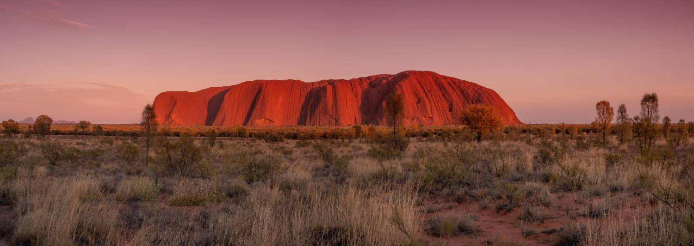

Find the part of Australia that fits your life.
Australia is a continent, not a country you settle into all at once. Where the opportunities are, and what daily life feels like, changes enormously between the big cities and the regions. These guides go local, state by state, so you can picture the move before you make it.

territories
Metro or regional, it changes everything
In Australia, the two have a different feel and a different job market. The big capitals offer the widest range of services and the busiest social life, but they’re also the most competitive to land a role in. The regions and remote areas are where demand for healthcare professionals is consistently highest, and where the incentives to move are strongest. Neither is "better"; it depends entirely on the life you’re after.
The big cities
Perth, Sydney, Melbourne, Brisbane, Adelaide and the larger coastal centres.
- The widest range of specialist services and the most varied caseload.
- Established diaspora communities, international schools and direct flights home.
- More applicants per role: roles can be more competitive and housing dearer.
The regions
Coastal towns, inland cities and remote communities beyond the capitals.
- The highest demand for healthcare professionals, and faster routes into a role.
- Often broader scope, more responsibility sooner and a close-knit team.
- Frequently linked to relocation support and regional visa pathways.
Where most people actually begin
Most clinicians picture a city before they picture a state, so these are our deepest guides — nine chapters each on the hospital system, the suburbs clinicians choose, what a week really costs and what a weekend looks like. Written to be useful whether or not you ever talk to us.
Sydney
The largest health system in the country, a hundred beaches — and the hardest housing arithmetic in Australia, priced honestly.
Melbourne
The deepest tertiary and research bench in Australia, the world’s largest tram network, and a city that rewards people who like cities.
Brisbane
Tertiary work and a family house within half an hour of it — the one big-city sum that still adds up, with a winter you look forward to.
Perth
The best beaches and weather of any capital, newer hospitals — and the only capital that counts as regional for skilled migration.
Adelaide
The most affordable mainland capital — tertiary work twenty minutes from home, wine country under an hour, and regional migration status.
Canberra
The country’s highest incomes, a lake at the centre of the plan, and a regional migration classification most people don’t expect.
Hobart
A mountain over the wards, a working harbour, and a health system small enough to know your name — plus regional migration status.
Darwin
Australia’s tropical gateway to Asia, home to the national trauma centre — and a regional migration classification most people don’t expect.
Gold Coast
Fifty-seven kilometres of surf, a rainforest hinterland, and a full tertiary teaching hospital growing as fast as the skyline.
Newcastle
A steel city rebuilt around a surf beach — a major regional hospital, wine country on the doorstep, and Sydney two hours away.
Or picture the whole state
Each state guide covers what is true across the whole of it — the health structure, the regional and remote centres where demand is highest, and the places worth considering beyond the capital. Where a city guide exists, the state guide links across to it. The ACT and NT are covered in full by the Canberra and Darwin city guides above.
New South Wales
The most populous state, a vast coastline, alpine country and a sweep of regional cities inland from the harbour capital.
Victoria
Compact and green, built around a celebrated cultural capital, with a ring of fast-growing regional cities within easy reach.
Queensland
Warm and decentralised, a string of coastal cities up the eastern seaboard and big demand the further north and inland you go.
Western Australia
The largest state by far, a sunny, relaxed capital on the coast, then enormous distances out to mining, coastal and remote communities.
South Australia
An affordable, easy-going capital famed for wine and festivals, with regional centres scattered across coast, river and outback.
Tasmania
An island state with a small-town pace, dramatic wilderness and a tight community feel across just a handful of centres.
Underrated places, and often the smartest move
The big-city guides above are honest about one thing: competition. Australia is an incredibly sought-after place to live and work, and roles in Sydney, Melbourne and Brisbane are the hardest to win. They do come up — but our advice is to also look at the places you may not have heard of yet, that are every bit as beautiful and have just as much to offer.
These are the ones we’re asked about least and recommend most: a lower cost of living than the big metros, strong demand for clinicians, and a lifestyle that genuinely delivers. Short, honest guides to the everyday feel of each.
Geelong
A bayside city on Corio Bay with the Surf Coast and Great Ocean Road at its back door, an hour from Melbourne.
Read the guide →Bunbury
WA’s largest regional city and the South West’s referral centre, two hours south of Perth. Nine chapters.
Read the guide →Mandurah
A waterside city on the Peel estuary, under an hour south of Perth by train. Nine chapters.
Read the guide →Bundaberg
A warm river city on the Coral Coast, gateway to the southern Great Barrier Reef, where clinicians are most needed.
Read the guide →We’ll help you weigh it up
Choosing between a capital and a regional move is one of the biggest calls you’ll make, and it shapes everything from your visa pathway to your weekends. Tell us what matters to your family and we’ll talk it through honestly, with no pressure either way.
- Where demand is strongest for your profession
- How metro vs regional affects your visa options
- Schools, housing and community for your family
- What relocation support may be available